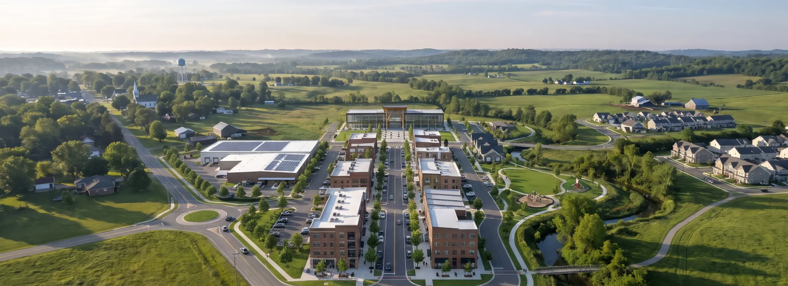

Why Ellory Valley
A place planned for the long run.
Ellory Valley pairs shovel-ready sites with the things that keep people here: good schools, short commutes and a main street worth walking. Our team works with site selectors from the first call to the ribbon cutting.
640acres
master-planned and entitled, with utilities at the lot line
4,200jobs
projected at full build-out across the manufacturing park and main street
18min
to the interstate, with a regional airport 35 minutes away
